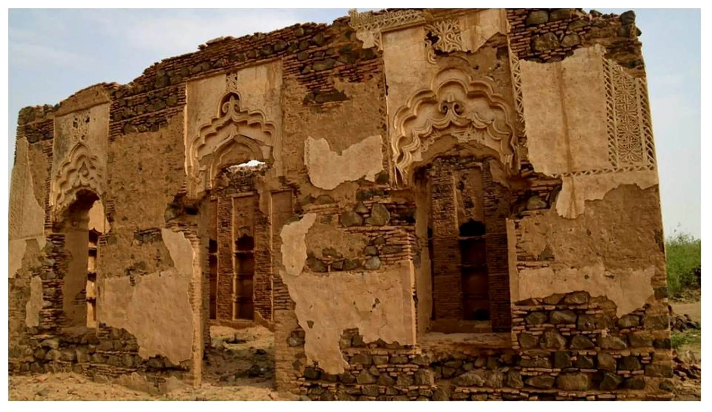

✦
ذاكرة جازان
أرشيف الوثائق والصكوك التاريخية
منصة رقمية لحفظ صور الوثائق التاريخية والمبايعات والصكوك والمشيخات القديمة في منطقة جازان، بعرض واضح ومنظم يليق بذاكرة المكان وتاريخه.
0وثيقة وصورة
5أقسام أرشيفية
200+عام من الذاكرة
الأرشيف التاريخيللتصفح
أحدث الوثائق المضافة
نماذج مختارة من الوثائق والصكوك المضافة للأرشيف.
تصفح حسب الأقسام
تصنيف بصري يساعد الزائر على الوصول للمواد التاريخية بسرعة.
معرض الوثائق
مجموعة من صور الوثائق التاريخية مرتبة حسب النوع والفترة والمصدر.
عن مشروع ذاكرة جازان
مشروع رقمي لحفظ الوثائق والصور التاريخية لمنطقة جازان، مع إبراز المخلاف السليماني، والصكوك، والمبايعات، والوثائق القبلية، والذاكرة العمرانية والثقافية، في عرض أرشيفي منظم وسهل التصفح.
ابدأ التصفح